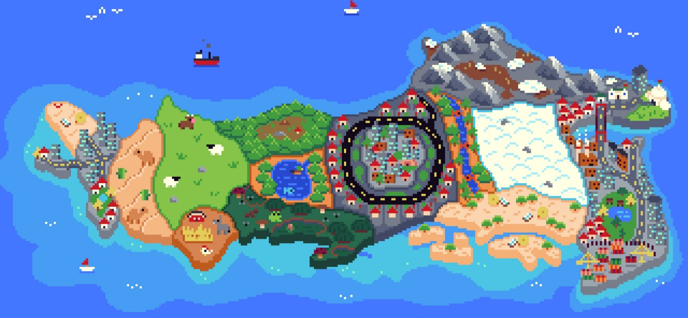
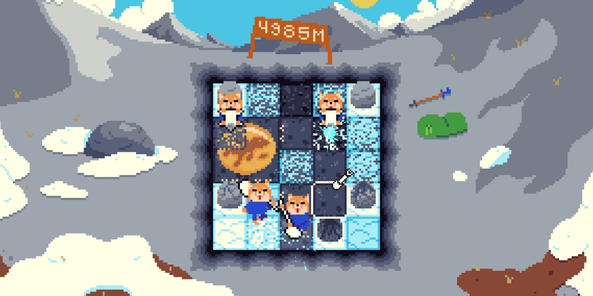
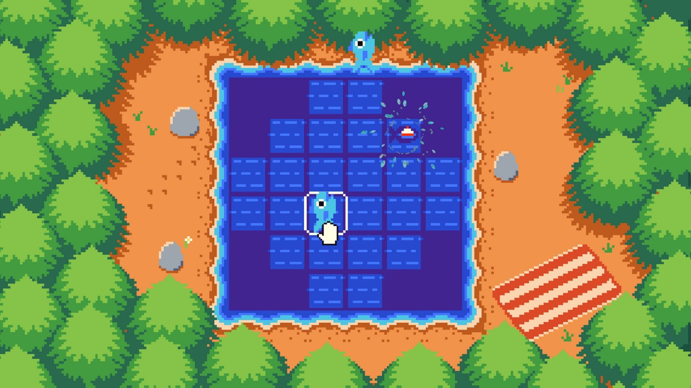
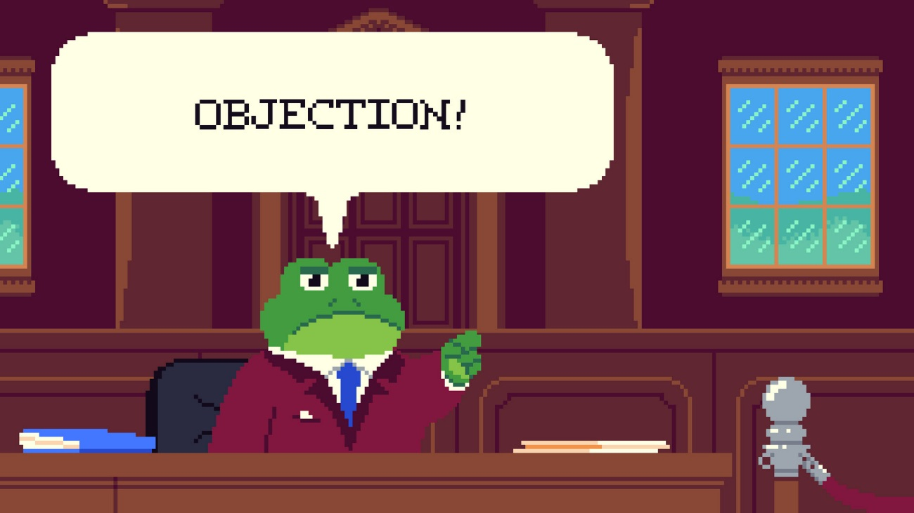
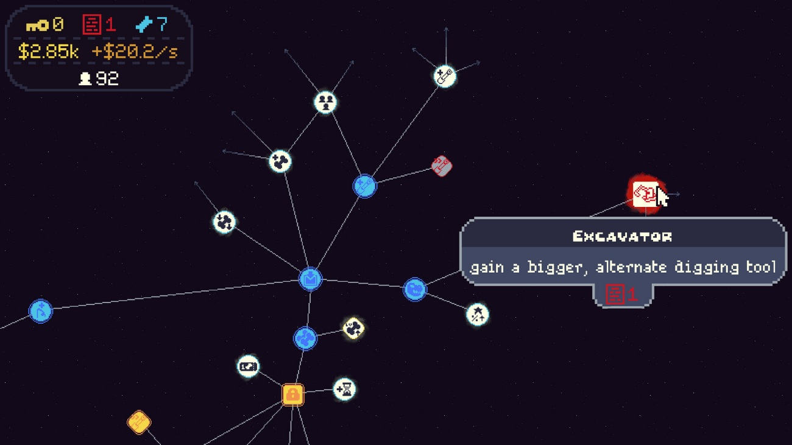
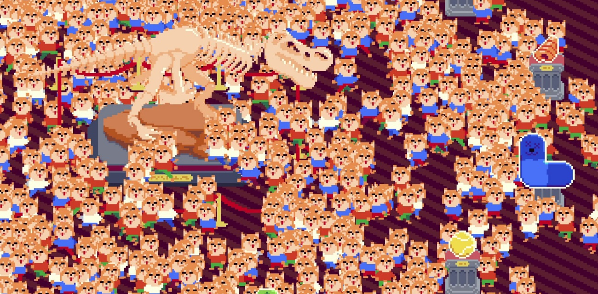

Juego incremental que descubrí por casualidad mientras miraba mi calendario personal de Steam. Vi que aparecía entre los incrementales, me llamó la atención y decidí darle un try. Pues bien, me ha sorprendido muchísimo. Diría que es el mejor incremental que he jugado en lo que llevamos de año y uno de los que más me han gustado en mucho tiempo. Es cortito, unas 3-4 horas, pero creo que aprovecha muy bien su duración y, sobre todo, sabe cuándo terminar.
Excavar, exhibir y volver a mejorar
El planteamiento es bastante sencillo. Hay un perro que quiere ganar las elecciones y cuyo gran proyecto electoral consiste en construir una autopista en una remota isla. Nosotros tenemos que excavar para abrirle camino y, de paso, recuperar artefactos que luego exhibiremos en nuestro museo. Cuantos más artefactos tengamos y mejores sean, más gente vendrá a visitarlo y más dinero conseguiremos. Ese dinero lo reinvertimos en un árbol de habilidades que nos permite excavar mejor, conseguir más artefactos y seguir aumentando los ingresos. Ese es el loop jugable y la verdad es que funciona de maravilla.

Lo que más me ha gustado es que verdaderamente sientes que estás progresando en todo momento. Las mejoras se notan y siempre tienes algo cerca que quieres desbloquear. A eso hay que sumarle los soniditos, los efectos y lo satisfactorio que resulta conseguir los artefactos. Está todo muy bien pensado para que quieras seguir jugando. En los primeros 15 minutos ya estás dentro del loop y pensando en qué vas a mejorar después. No he tenido esa sensación de estar perdiendo el tiempo que a veces me pasa con estos juegos.

Pequeños cambios que mantienen el ritmo
También ayuda muchísimo que vayas cambiando constantemente de nivel y que lo que haces varíe ligeramente. No estás siempre excavando de la misma manera durante horas. Por ejemplo, llega un momento en el que tienes que salvar a los peces de una zona contaminada y se introduce una mecánica de pesca. Son cambios que, junto a las nuevas tecnologías y mejoras, hacen que la experiencia se mantenga entretenida. Sorprendentemente, no se me ha hecho repetitivo ni monótono en ningún momento.

Una campaña electoral que cambia las mecánicas
Otro aspecto que destacaría es cómo utiliza la historia para acompañar la progresión. Es una trama sencilla que juega con la sátira política y los clichés electorales. El perro te vende las bondades de su proyecto, pero luego llegas a una isla y sus habitantes te recuerdan que estás destruyendo sus cultivos o pasando por donde viven. También aparece una rana que cuestiona sus afirmaciones sobre la contaminación y acaba compitiendo contra él por la candidatura. Van ocurriendo cosas que mantienen el interés y que además tienen su reflejo en las mecánicas.

Por ejemplo, esa disputa acaba trasladándose al árbol de mejoras, donde aparecen dos ramas distintas. La rana propone una alternativa sostenible con baterías que permiten excavar más rápido, mientras que el perro es más de conseguir resultados sin preocuparse demasiado por los medios. Su solución son las bombas. Despejas más terreno, sí, pero también tienes la posibilidad de que algún artefacto salga volando. Me ha gustado mucho que las diferencias entre los candidatos se trasladen a lo que haces como jugador. Todo está bastante bien hilado.
Reiniciar para que la historia avance
Pero probablemente lo que más me ha convencido es su sistema de prestigio. Para quien no esté familiarizado con el género, es básicamente reiniciar la partida para volver a empezar con ciertas ventajas. En muchos incrementales esto puede hacerse pesado porque vuelves a repetir lo mismo y poco más. Aquí haces tres runs y cada reinicio está asociado a algo que ocurre en la trama. La historia avanza, cambia ligeramente la situación y vas desbloqueando más cosas. Por ello, aunque empiezas de nuevo, no sientes que has perdido todo para volver a hacer exactamente lo mismo. Tienes ganas de ver qué viene después.

Un mundo agradable que sabe despedirse
A nivel artístico también me ha gustado mucho. El pixel art es muy bonito, especialmente el diseño de los animales, los escenarios y los colores. Es todo muy agradable de ver y encaja bien con el humor del juego. Las animaciones están bien, aunque tampoco diría que sean una cosa del otro mundo. En general, me parece un apartado bastante cuidado.
Una vez terminas queda una especie de endgame con mejoras permanentes que puedes seguir aumentando indefinidamente. Está bien tener la opción para quien quiera dedicarle más tiempo, pero personalmente no le veo demasiado sentido a seguir grindeando cuando ya has conseguido prácticamente todo. Para mí el juego acaba donde tiene que acabar. Sus 3-4 horas me parecen perfectas y creo que alargarlo más podría haber desgastado una propuesta que mantiene muy bien el ritmo durante toda la partida.
En definitiva, Big Dig me ha parecido un muy buen incremental. Me quedo con lo satisfactorio que es su loop jugable, lo bien marcada que está la progresión y cómo aprovecha la historia para introducir mecánicas y justificar los reinicios. Si os gustan los incrementales, me parece un must play. Y si nunca habéis jugado uno, os recomendaría igualmente darle una oportunidad. Es muy fácil entrar y, cuando menos te lo esperas, ya estás totalmente enganchado.

Lo mejor
- Las mejoras se notan y siempre hay un nuevo objetivo cerca.
- La historia da sentido a los reinicios y a las ramas de mejoras.
- Los cambios de nivel y de mecánicas mantienen el ritmo durante sus 3-4 horas.
Lo peor
- El progreso indefinido tras el final aporta pocos motivos para seguir jugando.
- Las animaciones cumplen, pero destacan menos que el diseño y los colores.
Desglose de puntuación
Veredicto
Un incremental muy satisfactorio que convierte cada mejora en un objetivo cercano. La sátira política y los reinicios ligados a la historia mantienen el interés durante una partida breve que termina en el momento adecuado.